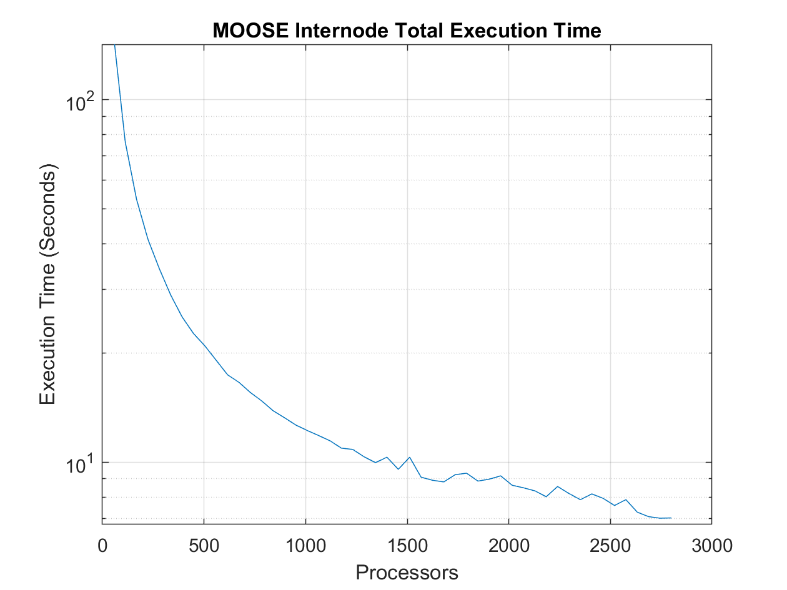

Moose Performance Scaling
Objective
Created a high-performance testing interface on the supercomputer, Frontera, to test the scaling performance of MOOSE.
Keywords
- Parallel Computing
- Performance Scaling
- Software Optimization
Results
After obtaining all the performance benchmarks regarding strong and weaking for MPI, I investigated the scaling performance of MOOSE through strong and weaking scaling. MOOSE's performance benchmarks are seen below where the parallel software library efficiency started to drop compared to MPI benchmarks.
The scaling performance starts to bottleneck as the number of processors increases. Because of this, I discovered that the MOOSE's mesh generator object creates the mesh serially on each processor which slows down the parallel finite element solver significantly. The serial mesh generation process causes each processor to load the entire mesh object on its allocated RAM. In many cases, the mesh overfills the memory-bound of the CPU's allocated RAM and causes the program to crash. Through the help of Dr. Clarno, I had the opportunity to collaborate with the MOOSE source code developer to purpose a fix to the mesh generation process within MOOSE.